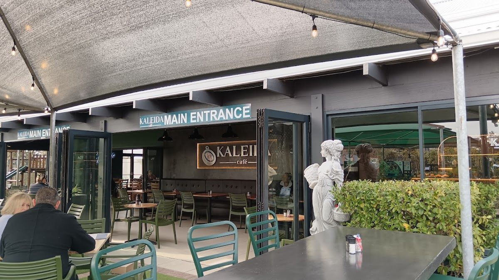
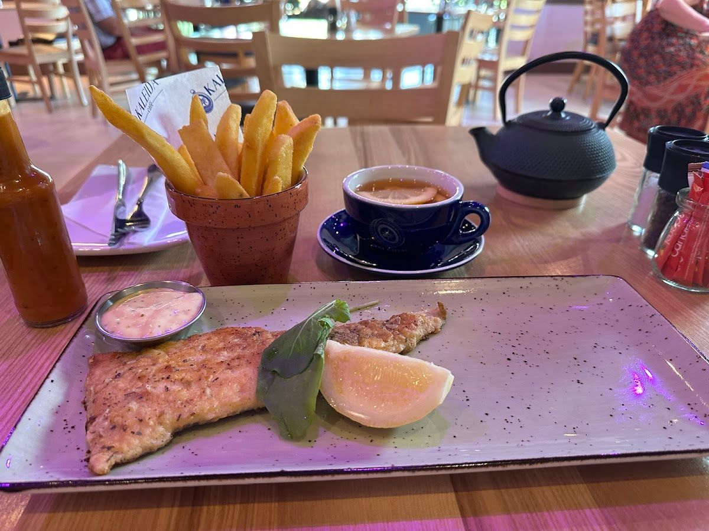
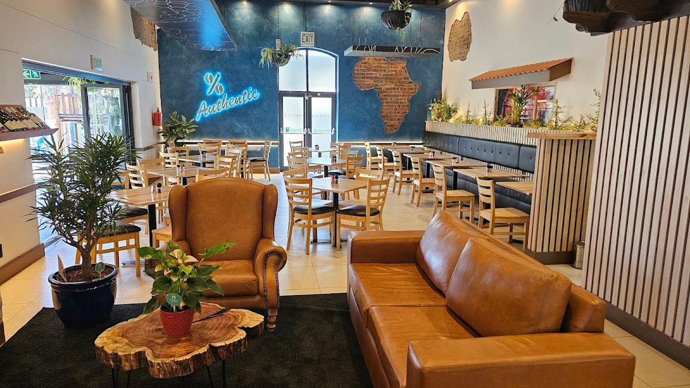
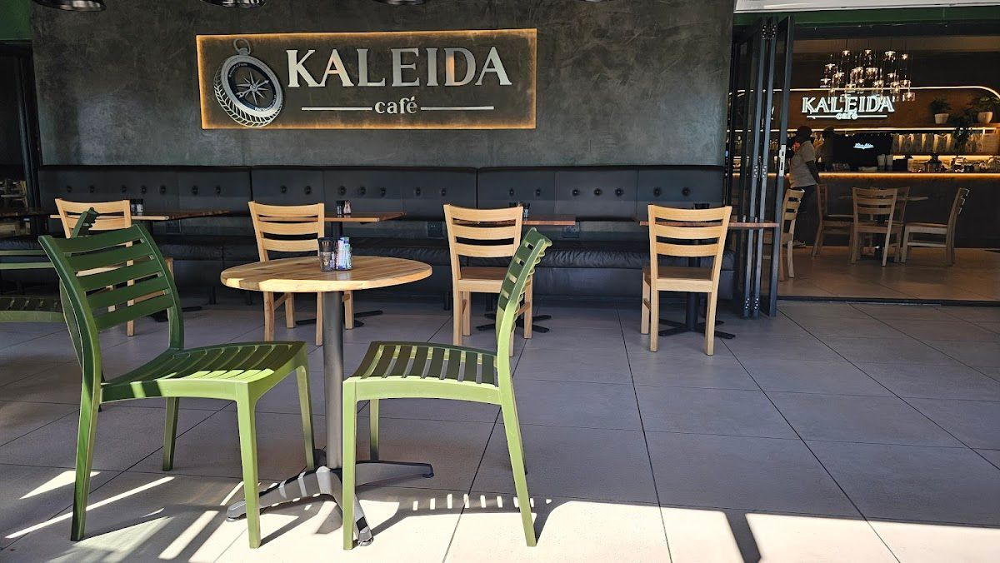

Kaleida Cafe is a vibrant coffee shop located in the heart of West Coast Village, Sunningdale, Cape Town. We specialize in serving artisan coffee, delicious breakfasts, and mouth-watering woodfired pizzas. Our cozy and welcoming atmosphere makes us the perfect spot for locals and visitors alike to unwind and enjoy good company.
Our journey began with a passion for quality and a love for community. We pride ourselves on our commitment to sourcing the finest ingredients and crafting each meal with care. Our team of friendly staff is dedicated to ensuring every visit is a memorable one, filled with great tastes and warm smiles.
At Kaleida Cafe, we believe in creating a place where everyone feels at home. Our promise to you is simple: to provide exceptional service, delicious food, and a welcoming environment. We invite you to come and experience the difference for yourself.
At Kaleida Cafe, we offer a wide range of products that cater to every palate. From rich, aromatic coffee to freshly baked pastries, we have something for everyone.
Our coffee is crafted from the finest beans, roasted to perfection to deliver a rich and flavorful experience with every sip.
Enjoy our hearty breakfast and lunch options, featuring fresh ingredients and creative dishes that satisfy both hunger and taste.
Our pizzas are made with handcrafted dough and cooked to perfection in our woodfired oven, offering authentic flavor with every bite.
Indulge in our selection of freshly baked pastries and cakes, perfect for a sweet treat or special occasion.
Here is what our clients say about us.
"Great place to work weekday mornings (gets a little noisy around lunchtime). Delicious samosas and pizzas 🤩 eggs Benedict is also great. 3/3 great meals so far 👍"— Tayla Calcott, ⭐⭐⭐⭐⭐
"One of my favourite places to chill and have an amazing meal, this time around I had the chicken, bacon and feta salad, a generous portion not drowning in lettuce, the best I have had. Go back often and am not disappointed !"— Lisa Barter, ⭐⭐⭐⭐⭐
"I would genuinely like to say that the burger and chips I had was one of the best I have ever had. Fresh toasted bun with a thick and juicy patty cooked medium as it should be. Hand cut chips and a very helpful and friendly waitress. Well done guys a fantastic venue, we will be back."— Saul Beder, ⭐⭐⭐⭐⭐




We'd love to hear from you — reach out to us anytime.